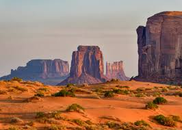
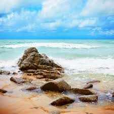
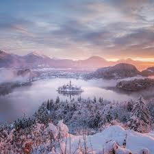
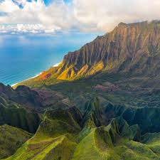
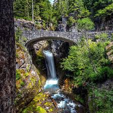
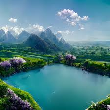

Desert landscapes are arid and harsh.

Beaches are landscapes covered in sand, pebbles, or small stones at the edge of a body of water.

Frosty landscapes have ice crystals that form on surfaces when temperatures drop below freezing.

Coastal mountains are steep with sharp ridges.

Bridges in landscapes add functionality or beauty.

Green landscapes are areas with lots of healthy plants, grass, and trees.